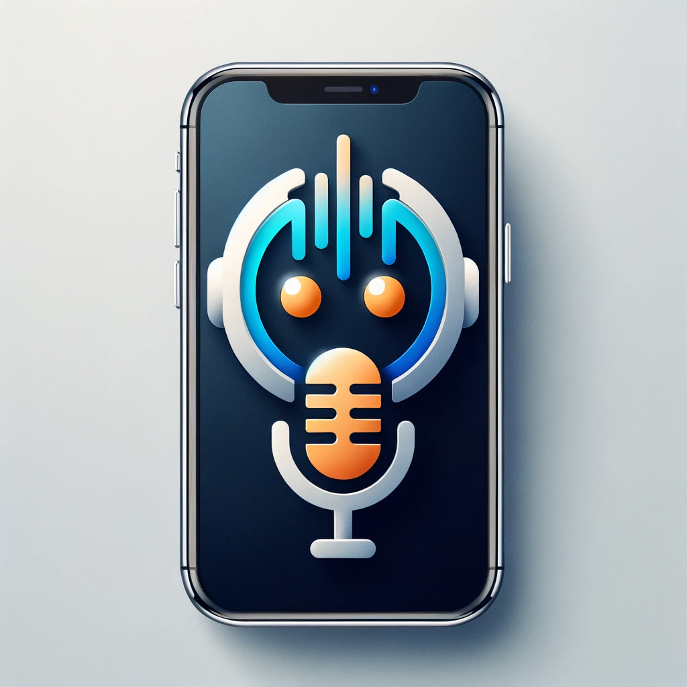

Turn your phone into a friend: this app lets you shape a chatbot's personality and clone a familiar voice, making conversations feel more personal and real
"Talk To Listen" is a mobile application empowers you to create unique chatbots, infused with distinctive personalities and even the ability to mimic a voice of your choice. Imagine talking with a friend that not only talks like someone you know but also understands and responds with empathy and intelligence
The app allows users to create their own bots, each with a unique personality and voice, by uploading a few seconds of voice audio. Users can create multiple bots in this way. Additionally, the app comes with a variety of default bots, each featuring different personalities and voices. Users have the freedom to choose and chat with any bot they prefer. There will be hundreds of default bots to choose from, and the number will grow as more users join the community and create their own bots which has their own unique personality and voice to share with the world
Every great app begins by solving a real-world problem
Think about those times when you're alone and yearning to hear a familiar voice, like your mom's or a faraway lover but there is timezone difference
Or those restless nights when you just need someone to talk to, someone who understands you deeply, both your strengths and your weaknesses, and then go to sleep
If you're shy or just need a comforting conversation, imagine having someone who knows you well and can chat with you anytime
With Talk To Listen, you can have a companion with you anywhere, anytime — whether you're cooking, walking, chilling, ....